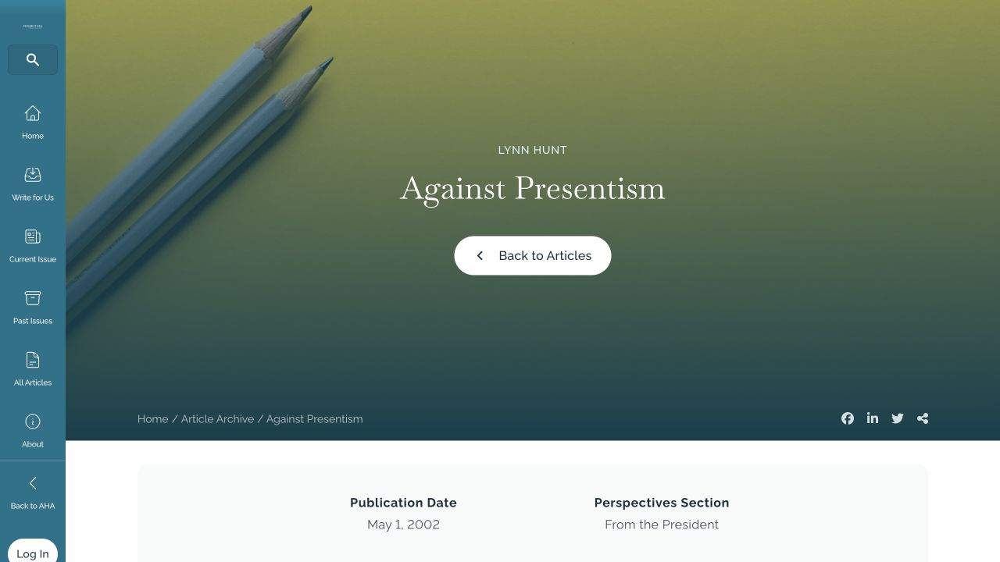
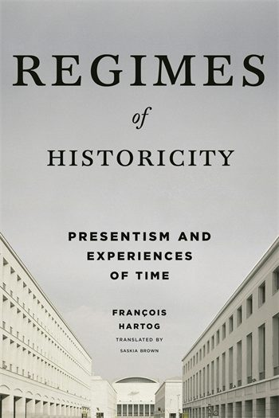
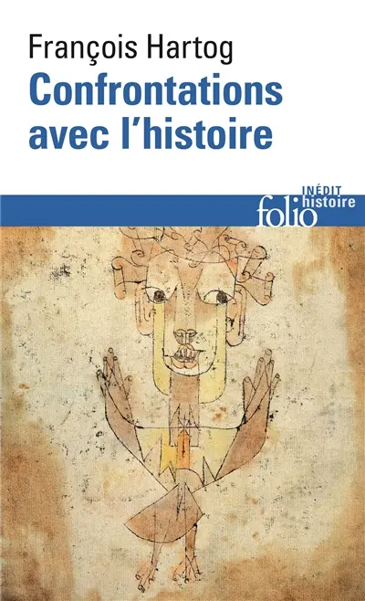

53:34 · 13 OPERE
Demolire il passato per ricostruire il futuro.
Il filo del discorso
La decisione di rimuovere la statua di Thomas Jefferson dall’aula consiliare di NewYork apre una riflessione sul modo in cui il presente giudica il passato. Il relatore contrappone la forza politica della Dichiarazione di indipendenza alla condanna retrospettiva del suo principale estensore e riconduce la vicenda a una crisi della memoria storica. Una lunga digressione affronta la qualità delle opposizioni,la propaganda,il linguaggio televisivo e il rapporto fra libertà individuali e vita collettiva nel periodo delle restrizioni pandemiche. Il ritorno a Jefferson passa per il concetto di presentismo,con riferimenti a LynnHunt e FrançoisHartog,e termina con il mondo perduto descritto da StefanZweig. Il nucleo del discorso è la richiesta di studiare i contesti prima di pronunciare giudizi e di non scambiare la autorità di una sede per una prova. La scheda distingue questa interpretazione dai documenti: il progetto municipale prevedeva un prestito museale della statua,non la sua distruzione; il ruolo di Jefferson nella formulazione dei diritti convive con la sua responsabilità di proprietario di persone schiavizzate. Distingue inoltre la Dichiarazione1776 dalla Costituzione1787,e mantiene attribuite al relatore le accuse politiche e le valutazioni sanitarie che la sola conversazione non dimostra.
I libri nel discorso

Dichiarazione d’indipendenza degli Stati Uniti d’America
Facsimile: incisione di Stone del 1823: Documento del 4 luglio 1776 · incisione di William J. Stone del 1823
Riproduzione documentaria dell’incisione di Stone del 1823 conservata dai National Archives. Non è la pergamena originale del 1776, né la copertina di un libro.
Dichiarazione1776 esplicita,con lettura e commento del preambolo su eguaglianza e diritti.
Passaggio 1:56 ↗ · Fonti e libro ↗
Idea per una storia universale in un intento cosmopolitico
Identificazione probabile
Copertina della raccolta Sette scritti politici liberi: COPERTINA DELLA RACCOLTA Sette scritti politici liberi, Firenze University Press 2011, a cura di Maria Chiara Pievatolo, ISBN 9788864532981. Il saggio del 1784 è il primo testo della raccolta; la metafora del legno storto si trova nella sesta tesi, pagina stampata 31. Immagine della raccolta, non di un’edizione autonoma né dell’esemplare del relatore.
Copertina della raccolta che contiene il saggio del 1784; riutilizzata dal riferimento già presente al testo sull’Illuminismo. Il titolo del saggio è un’identificazione contestuale.
Legno storto della umanità,espressione kantiana riconoscibile nella proposizioneVI; titolo non pronunciato.
Passaggio 8:59 ↗ · Fonti e libro ↗
Matrix (The Matrix,1999)
Locandina del film Matrix1999 dal catalogo digitale: Film1999,regia di Lana e Lilly Wachowski,KeanuReeves,LaurenceFishburne,CarrieAnneMoss. Locandina orizzontale del catalogo digitale,non copertina narrativa o fotogramma della specifica scena citata.
Visti interamente titolo e personaggiNeo,Morpheus,Trinity. Immagine acquisita dal riferimentoog:image della pagina del film; non si attribuisce una edizioneDVD o il1994 a un film uscito nel1999.
TheMatrix esplicito nel racconto del cartello diZuccottiPark; il film riusa un motto antico.
Passaggio 12:34 ↗ · Fonti e libro ↗
Quaderni del carcere
Copertina: Einaudi, ET Biblioteca, 18 luglio 2014, ISBN 9788806223441, edizione critica dell’Istituto Gramsci a cura di Valentino Gerratana, in quattro volumi con apparato. Copertina grigio-azzurra con ritratto di Gramsci; la scheda commerciale indica 3480 pagine, mentre alcune descrizioni catalografiche computano separatamente preliminari e testo. Edizione critica originaria 1975; i quaderni furono scritti nel 1929–1935. La variante commerciale Quaderni dal carcere non è registrata come seconda opera.
Copertina intera dell’edizione in quattro volumi, non una fotografia dei manoscritti o dei quattro dorsi. Il riferimento del video è al testo Q15§5, non all’intera edizione letta integralmente dal redattore.
Quaderni diGramsci espliciti; nessuna edizione identificata.
Passaggio 16:41 ↗ · Fonti e libro ↗
La Repubblica
Identificazione probabile
Copertina: Laterza · La Repubblica · edizione con testo a fronte di riferimento
Immagine associata all’ISBN di riferimento e controllata visivamente; edizione e traduzione non identificate come quelle citate o lette nel video.
Motivo dei filosofi governanti,riconoscibile inRepubblica473c–d; titolo non pronunciato.
Passaggio 18:04 ↗ · Fonti e libro ↗
Costituzione degli Stati Uniti d’America
Copertina della raccolta: Testo firmato il17settembre1787. Per l’immagine si usa la raccolta Penguin Classics The Federalist Papers, ISBN9780140444957, che dichiara di includere il testo della Costituzione; non è una fotografia della pergamena originaria.
Copertina autentica di The Federalist Papers: la descrizione editoriale attesta che la raccolta comprende il testo completo della Costituzione. Non è il frontespizio costituzionale del1787 e Hamilton, Madison e Jay non sono presentati come unici autori del documento.
Costituzione degliStatiUniti esplicita nel racconto del taxi; il successivo WeThePeople appartiene a questo documento1787.
Passaggio 22:56 ↗ · Fonti e libro ↗
La società aperta e i suoi nemici
Identificazione probabile
Copertina: Armando Editore · Classici · 2018 · volume unico
Copertina autentica di riferimento, controllata visivamente. L’edizione non è identificata come quella usata nel video.
Platone chiamato nemico della società aperta: allusione riconoscibile alla opera diPopper,senza edizione.
Passaggio 26:52 ↗ · Fonti e libro ↗
Bibbia
Copertina: San Paolo, 2014 · Nuova Versione dai Testi Antichi · edizione di riferimento
Vangeli espliciti; il padre delle mezze verità è una parafrasi,non la formula letterale diGiovanni8:44.
Passaggio 27:47 ↗ · Fonti e libro ↗
Costituzione della Repubblica Italiana
Copertina dell’edizione Intra aggiornata al 2023: Intra · 2023 · introduzione di Umberto Vincenti
Copertina autentica del testo integrale, aggiornata alla legge costituzionale 26 settembre 2023 n.1. È successiva al filmato del 2019 e non rappresenta la versione storica letta dal relatore. Umberto Vincenti firma l’introduzione. I tentativi di acquisire PDF istituzionali hanno restituito HTTP 403: nessun PDF o frontespizio è simulato come scaricato.
Discussione su libertà personale e riunione,con numero di articolo incerto; riscontro separato negliarticoli13,17,21,32.
Passaggio 33:41 ↗ · Fonti e libro ↗
Against Presentism
Intestazione originale della pagina AHA con autore,titolo e data: Perspectives on History,American Historical Association,1maggio2002,rubrica From the President. Immagine della intestazione reale della pagina pubblicaAHA,con autore,titolo e data. Non è una copertina di libro o la scansione del fascicolo cartaceo2002.
Acquisizione diretta nel browser della prima schermata della paginaAHA; vista interamente. Nessuna intestazione ricostruita o copertina simulata. Il PDF del fascicolo non era accessibile; la immagine documenta la pagina web attuale dello articolo2002.
LynnHunt,2002 e AgainstPresentism espliciti; articoloAHA,non libro diJamesSweet.
Passaggio 45:29 ↗ · Fonti e libro ↗
Régimes d’historicité. Présentisme et expériences du temps
Copertina: Originale francese,Seuil,2003,ISBN9782020593281. Copertina della traduzione inglese Regimes of Historicity: Presentism and Experiences of Time,Columbia University Press,febbraio2015,hardcover,288pagine,traduzione di SaskiaBrown,ISBN9780231163767. La immagine collegata dal catalogo reca questo ISBN; il paperback2016 è un formato distinto.
Copertina autentica della traduzione inglese hardcover2015,non della prima edizione franceseSeuil2003 nominata nel video. Nessuna edizione precisa attribuita al relatore.
FrançoisHartog,Régimesd’historicité ed editoreSeuil espliciti; originale2003.
Passaggio 45:46 ↗ · Fonti e libro ↗
Confrontations avec l’histoire
Copertina: Gallimard,Folio histoire309,6maggio2021,ISBN9782072932007. Copertina autentica del volume cartaceo. Il catalogo editoriale indica368pagine,mentre cataloghi bibliotecari descrivono362pagine: la differenza di conteggio è conservata,senza confonderla con una altra opera.
Immagine autentica riscontrata nel catalogoMollat; titolo,autore,Foliohistoire e illustrazione verificati. Non è una pubblicazione2011 o2003.
Confrontationsavecl’histoire diHartog esplicito,volume2021; cronologia separata dal titolo2003.
Passaggio 46:03 ↗ · Fonti e libro ↗
Il mondo di ieri. Ricordi di un europeo
Copertina: Newton Compton, edizione integrale, cura e traduzione di Silvia Montis,352 pagine; ISBN indicato nel catalogo 9788854148819.
Copertina autentica della scheda Newton Compton, con fascetta promozionale riferita al film Grand Budapest Hotel. La fascetta è parte dell’immagine editoriale, non un’opera aggiunta al repertorio. Nessuna tiratura specifica è attribuita al video.
StefanZweig,Ilmondod ieri e1942 espliciti; riflessione sui ponti crollati fra epoche.
Passaggio 50:29 ↗ · Fonti e libro ↗Minutaggi ricavati da testi automatici, da riascoltare. Le identificazioni probabili sono segnalate accanto ai libri.